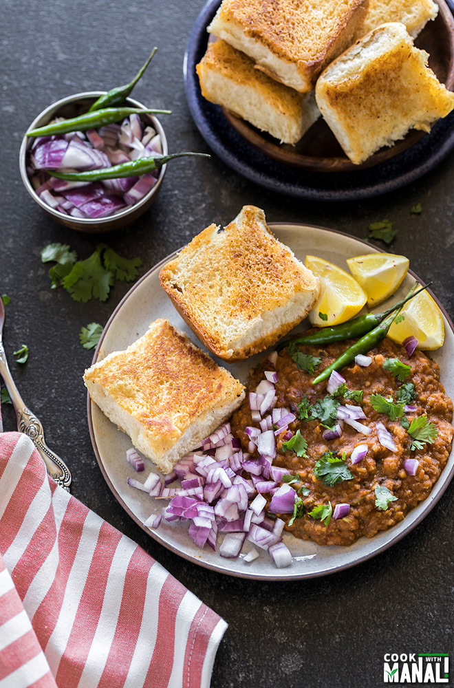

Pav Bhaji

Description
Pav bhaji, an Indian dish consisting of vegetable stew and a soft dinner roll or bread, is a hearty meal that can be prepared and eaten quickly.
Community members recommend topping it with fresh tomatoes, extra cilantro, and Cheddar cheese.
Ingredients
- ½ cup vegetable oil
- 2 teaspoons chopped garlic
- 1 teaspoon finely chopped green chile peppers
- 1 cup chopped onions
- 2 teaspoons grated fresh ginger
- 1 cup chopped roma (plum) tomatoes
- 2 cups cauliflower, finely chopped
- 1 cup chopped cabbage
- 1 cup green peas
- 1 cup grated carrots
- 4 potatoes, boiled and mashed
- 3 tablespoons pav bhaji masala
- salt to taste
- 1 tablespoon lemon juice
- 8 (2 inch square) dinner rolls
- ½ tablespoon butter
- ¼ cup finely chopped onion
- 1 tablespoon finely chopped green chile peppers
- ¼ cup chopped fresh cilantro
Steps
- Boil the veggies first and keep them ready.
- Heat 1 tablespoon of butter and oil in a large pot on medium heat. Once the butter melts and oil is hot, add the cumin seeds and let them sizzle.
- Add the chopped onions and mix. I like to use my food processor to chop them really fine.
- Cook the onions for around 4 minutes until golden brown in color. Add the finely chopped ginger, garlic and green chili. Again, I used my food processor to chop them really fine.
- Add chopped tomatoes and mix well. Let the tomatoes cook for 2 minutes.
- Add tomato puree, 1/4 cup water and 1/4 teaspoon salt. Cover the pan and let the tomato cook for 6 minutes until softened and completely cooked.
- Add the pav bhaji masala, Kashmiri red chili powder, red chili powder and remaining 1 teaspoon of salt. You may also add 1/2 teaspoon of sugar here (optional).
- Mix well and then add in 2 teaspoons of kasuri methi (dried fenugreek leaves).
- Stir in the boiled veggies and mix.
- Using a potato masher, mash the veggies until they are completely mixed with the masala.
- Add the remaining 3/4 1 cup water and mix. I used an immersion blender to blend the veggies to a paste like consistency, this is optional. You may keep them as such.
- Open the pot and add in the remaining 2 tablespoons of butter.
- Add a generous amount of chopped cilantro.
- Then add in juice of 1 large lemon. Let the bhaji simmer for 2 more minutes and then remove pan from heat.
- To toast the pav, melt butter on a pan. Sprinkle some pav bhaji masala on top of the butter and then place the buns on the pan.
- Press to toast the pav until crisp and golden brown from both sides.